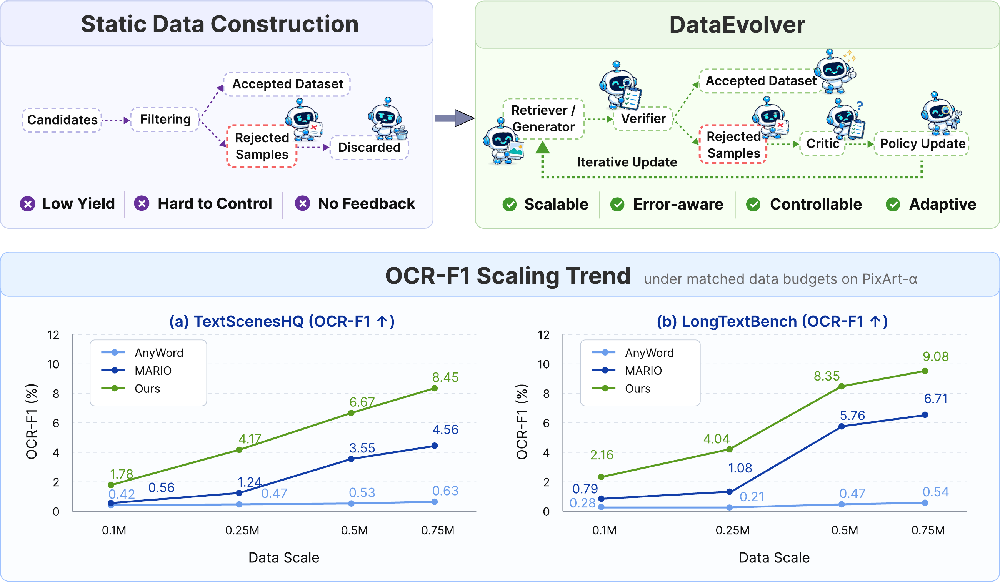
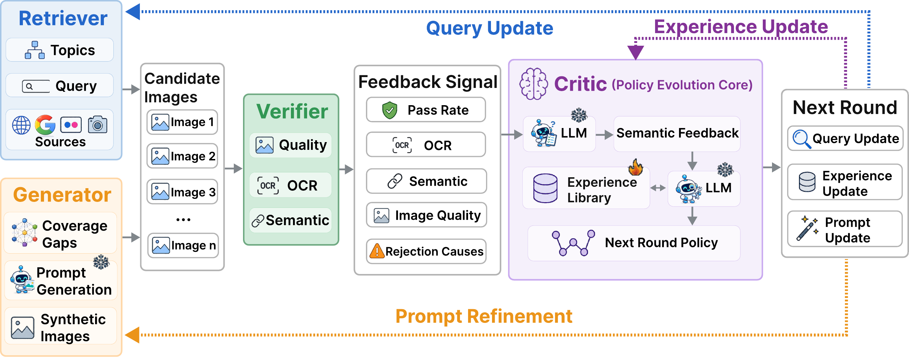
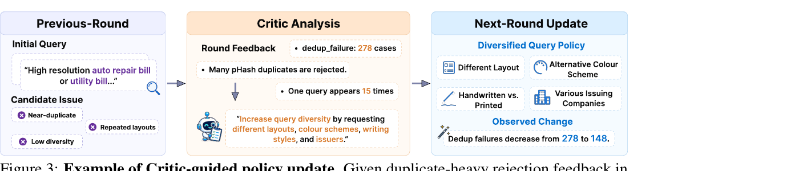
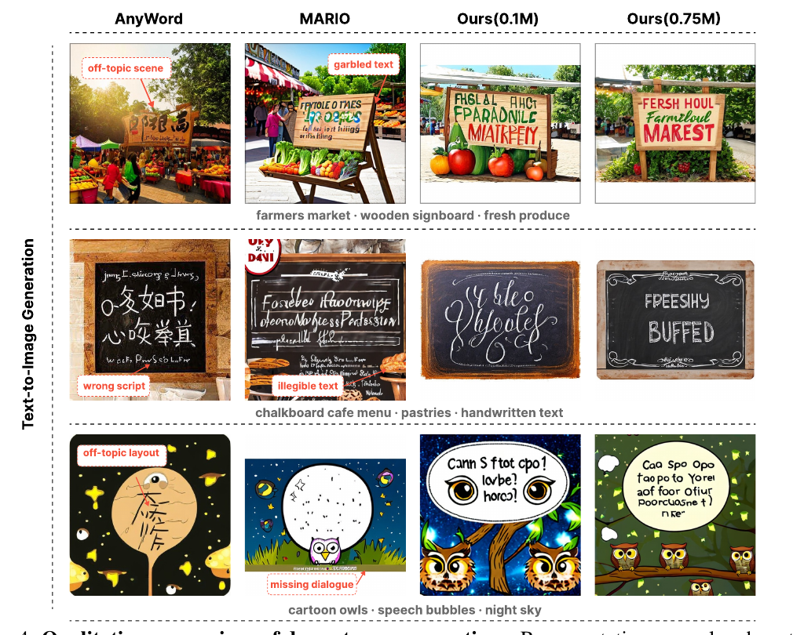
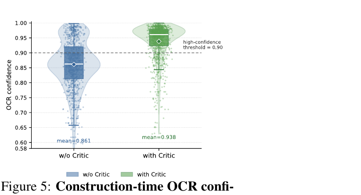

DataEvolver: Self-Evolving Multi-Agent Data Construction for Text-Rich Image Generation

问题重构
数据构造 = 策略演化,不是一次性预处理。优化对象是「生产数据的过程 π」,不是「一批冻结的数据」。
四智能体闭环
Retriever(拉候选) → Verifier(打分+归因) → Critic(反馈→改策略) → Generator(补覆盖空洞),反馈记忆驱动下一轮。
无梯度优化
整个「优化」发生在自然语言策略空间:改 query、改 prompt、改经验库。不更新任何模型参数,靠 LLM agent 读统计量吐策略。
验证器固定
Verifier 配置全程冻结、不参与优化——这是让「策略变好」这件事可归因的实验设计前提。
1. 出发点 (Motivation)
文字图生成 (text-rich image generation) 是图像生成里最难的设定之一:模型要同时满足视觉真实、文字可读、语义对齐、版式一致四件事。一个招牌上的 "FARMERS MARKET" 少一个字母、糊一块,人眼立刻发现,OCR 指标也立刻崩。而模型能力的天花板,越来越不是架构,而是喂进去的训练数据。
现有的大规模多模态数据集 (LAION-5B、COYO-700M、DataComp,以及文字图专用的 MARIO-10M、AnyWord-3M) 几乎都遵循同一个范式:crawl → filter → freeze。采集候选、跑一遍固定过滤规则、把通过的冻结成训练集。这个范式在「规模」上很成功,但它把一件事当垃圾扔了——被拒的样本。
论文的观察很朴素但站得住:被拒样本不是噪声,是诊断证据。它们能暴露:哪些检索 query 反复产生重复图 (pHash 撞车)、哪些主题始终覆盖不足、哪些版式/字体/文字模式反复触发 OCR 失败。静态管线把这些信号只当作「过滤结果」用掉一次就丢,于是后面几轮会重复犯同样的错。
DataEvolver 的问题重构是:不要只收集更多样本,要把构造期的失败转成显式反馈,去引导后续的检索规划和定向补全。换句话说,把「数据构造」从一次性预处理,变成一个策略执行 → 反馈收集 → 策略修订的闭环。
text-rich image
画面里含有大量可读文字的图:招牌、菜单、包装标签、票据、说明书、UI 截图等。评测靠 OCR 读出文字再和 prompt 比对。
OCR-F1
把生成图跑 OCR,识别出的文字与目标文字做模糊匹配 (阈值 70) 后算 precision/recall 的调和平均。本文的主指标。
pHash
感知哈希。给图算一个对轻微变化鲁棒的指纹,汉明距离 ≤ 阈值即判近重复,用来去重。
Verifier
验证器。对每张候选做多维检查 (质量/OCR/语义/去重/水印/文字一致),输出通过与否 + 拒绝原因。全程配置固定。
Critic
策略演化核心。把一轮的拒绝统计读成一段自然语言反馈,再据此改写下一轮的 query / prompt,并维护经验库。
经验库 (Experience Library)
一个跨轮持久化的 JSON 记忆,存高价值的语义反馈和有效 query 模式,靠 Add/Delete/Keep 操作防止无限膨胀。
覆盖空洞 (coverage gap)
某个 topic–subtopic 在通过集里的样本数显著低于均值 (或低于下限)。Generator 专门给这些格子做定向合成。
匹配数据预算 (matched budget)
所有方法在**同样的训练样本数**下比较 (0.1M/0.25M/0.5M/0.75M),隔离「数据质量」这一个变量。
2. 方法 (Method)
DataEvolver 把数据构造形式化成一个迭代策略精化 (iterative policy refinement)。整节的骨架只有五个式子,但每一个都在代码里有对应的落点。这一节的写法是:先给式子 → 一句翻译 → 指到 repo/ 里实现它的那个函数。

2.1 把「数据集」换成「策略」——优化对象变了
传统管线优化的是一批数据 \(D\)。DataEvolver 优化的是生产这批数据的策略 \(\pi\)。第 \(t\) 轮的策略是一个三元组:
—— 翻译:策略 = (检索策略 $Q_t$,生成 prompt 策略 $P_t$,经验库 $E_t$)。注意 Verifier 的配置不在这个元组里——它是固定的裁判,不是被优化的选手。这是全篇最关键的设计取舍:如果裁判也跟着变,你就无法判断「第 5 轮数据比第 1 轮好」到底是策略变聪明了还是裁判放水了。
在策略 \(\pi_t\) 下,系统先产出一批原始候选 \(I_{\text{raw}}^t = \{i_1,\dots,i_n\}\),再经固定验证得到通过集:
—— 翻译:候选进来 $n$ 张,固定裁判筛掉一批,剩下的进数据集。子集符号 $\subseteq$ 就是「只减不增」的过滤。
一个高中生能懂的类比:这像一家不断改进采购流程的工厂。传统做法是「按固定清单进货 → 质检 → 合格的入库,不合格的扔掉」。DataEvolver 是「每天下班统计今天为什么退货这么多 (太多重复款?某个尺码没人要?),明天照着改进货单」。优化的不是今天这批货,是进货单本身。
2.2 轮级反馈信号——把一轮压成一个五维向量
要让策略能被修订,得先把「这一轮干得怎么样」量化。作者不用单一的 pass/fail,而是一个多维反馈:
—— 翻译:一轮的体检报告有五项:$\rho_t$ 通过率、$\bar O_t$ 平均 OCR 质量、$\bar C_t$ 平均语义一致性、$\bar I_t$ 平均图像质量、$R_t$ 拒绝原因向量(把失败按「模糊 / OCR 失败 / 语义不符 / 版式损坏 / 重复」分类计数)。前四项说「好不好」,第五项说「为什么不好」——第五项才是能拿来改策略的那个。
这个 \(s_t\) 在代码里就是 RejectionVectorRoundTracker._persist_round。每积满一轮 (默认 round_size: 1000) 就把它序列化成一个 payload:
repo/src/utils/trackers.py:317-345 — 把一轮的原始计数落成反馈信号 $s_t$(pass_rate=$\rho$、metrics=$\bar O,\bar C,\bar I$、rejection_vector=$R$)
def _persist_round(self) -> None:
"""Finalise the current round: build vector, call critic, persist JSON."""
vector = self._build_vector() # R_t:按拒绝原因分桶的百分比向量
vector.append(self._reason_total)
pass_rate = (self.accepted / self.processed) if self.processed else 0.0 # ρ_t
payload = {
"round_id": self.round_index,
"processed": self.processed,
"accepted": self.accepted,
"rejected": self.rejected,
"pass_rate": round(pass_rate, 6), # ρ_t
"rejection_vector": vector, # R_t
"vector_labels": self.vector_labels,
"metrics": self._metrics_payload(), # {avg_ocr_conf=Ō, semantic=C̄, quality=Ī, ...}
"rejection_reason_counts": dict(self._reason_counts),
"accepted_queries": sorted(...), # 哪些 query 产出了通过样本
...
}
_build_vector 里有个值得一提的细节:一张被拒图可能同时命中多个原因,它把「100 分」按被拒总数均分,再在多原因间再均分——weight = base / count——避免一张多标签图把某个原因的占比灌爆 (trackers.py:277-291)。这是把「拒绝原因」做成可比较分布、而非裸计数的工程处理。
2.3 Critic:把统计量翻译成自然语言策略——本篇的「梯度」
有了 \(s_t\),怎么改 \(\pi\)?这里是全篇最反常规的一步。传统机器学习会对某个 loss 求梯度。DataEvolver 没有梯度——它让一个 LLM 读 \(s_t\) 和上一轮 \(s_{t-1}\)、以及经验库 \(E_{t-1}\),吐出一段自然语言反馈 \(F_t\):
—— 翻译:Critic 对比这一轮和上一轮的拒绝分布 + 翻历史经验,写出一段话,例如「去重失败从 5 涨到 20、水印相关关键词拒绝率高,建议弱化含 watermark 的 query」。这段话就是本方法的「梯度」——它指出策略该往哪个方向调。
然后用这段反馈组合出下一轮策略:
—— 翻译:新策略 = 拿旧策略,按反馈 $F_t$ 改写 query 和 prompt,并更新经验库。整个精化「完全发生在自然语言策略空间」(原文),不碰任何模型权重。这既是它的优点 (便宜、可解释、可追溯),也是它的天花板 (见 §5)。
\(F_t = \text{Critic}(\cdot)\) 落在 _generate_semantic_advantage。注意它喂给 LLM 的正是当前轮/上一轮的拒绝计数加上 keyword 表现 (哪些 query 词更多出现在被拒 vs 通过样本里):
repo/src/critic.py:333-360 — F_t = Critic(s_t, s_{t-1}, E_{t-1}):把两轮拒绝计数 + keyword 分析注入 SemanticAdvantageAgent
def _generate_semantic_advantage(self, current, previous) -> str:
...
current_counts = current.get("rejection_counts") or {}
prev_counts = (previous.get("rejection_counts") or {}) if previous else {}
kw_analysis = current.get("queries") or {} # {accepted:[...], rejected:[...]}
inject_data = {
"current_rejection_counts": json.dumps(current_counts, ensure_ascii=False),
"prev_rejection_counts": json.dumps(prev_counts, ensure_ascii=False),
"keyword_analysis": json.dumps(kw_analysis, ensure_ascii=False),
}
text = self.semantic_agent.run_template(inject_data).strip() # LLM 吐出 4-6 句自然语言反馈 F_t
return text or self._fallback_advantage(context)
对应的 prompt (附录 B.2) 明确要求输出「一段 4–6 句连续自然语言,不要 bullet、不要 JSON」,并给了范式:"Blurry sample ratio increased (Prev: 5 -> Curr: 20)... Suggestions: remove watermark-related keywords due to high rejection association." ——这正是 Fig. 3 那个「去重失败 278 → 148」案例的来源。

Compose(·) 在代码里被拆成两个并行分支:更新经验库 + 规划下一轮 query。这里的工程细节是用 ThreadPoolExecutor 同时跑,因为两者都要等 LLM,串行会翻倍延迟:
repo/src/critic.py:251-266 — Compose:advantage 出来后,并行地(经验库更新 || 策略规划)
candidates = self._candidate_queries_from_stats(stats)
with ThreadPoolExecutor(max_workers=2) as executor:
future_exp = executor.submit(self._update_experience_library, adv_entry, candidates)
future_strat = executor.submit(self._plan_strategy, adv_entry) # 生成下一轮 query
self.experience = future_exp.result() # E_{t+1}
strategy = future_strat.result() # Q_{t+1} 的 query 列表
生成的新 query 由 feedback_loop 在下一轮开始时压进检索队列——这就完成了 \(Q_t \to Q_{t+1}\) 的闭环 (worker/feedback.py:67-104)。经验库更新还有一个「Add | Delete | Keep」的保守协议 (附录 B.2 的 Experience Library prompt),默认 Keep,只有当反馈「确实新颖且显著更强」才 Add——这是防止记忆无限膨胀 / 被噪声污染的护栏。
2.4 Generator:把覆盖空洞变成定向合成
检索有天花板:稀有主题、复杂版式、长尾文字模式,爬不到就是爬不到。Generator 负责补。它先数每个 topic–subtopic 的覆盖:
—— 翻译:$G_t(u,v)$ 就是「主题 $u$、子主题 $v$ 这个格子,当前通过集里有几张」。竖线 $|\cdot|$ 是集合计数。显著低于均值、或低于预设下限的格子,标记为「欠代表」,交给生成器补。
覆盖统计和「每个格子还差几张」的分配落在 count_analyse.py。它先让 LLM 规划需求 (附录 B.1 的 Coverage Planning prompt),再用 scale_count_needs 按缺口 gap 等比缩放、并尊重每格上限:
repo/src/tools/count_analyse.py:105-120 — 把 LLM 规划的「各格需求」按总缺口等比缩放(coverage gap → 定向合成配额)
if raw_total >= gap:
ratio = gap / raw_total # 需求超过缺口就等比压缩
prelim, fracs, used = {}, [], 0
for k, v in clipped.items():
scaled = v * ratio
base = math.floor(scaled)
rem = caps_remaining[k]
if rem is not None:
base = min(base, rem) # 不超过该格剩余上限
prelim[k] = base
used += base
fracs.append((scaled - base, k)) # 留小数余量,后面按大小分配 leftover
生成图 (Qwen-Image T2I) 走和检索图完全相同的固定 Verifier。关键闭环:如果某类生成样本反复在 OCR/语义/质量上失败,这些失败也进 \(R_t\),Critic 会把它总结成反馈去改写生成 prompt (附录 B.2 的 Prompt Refinement,按 failure_stage 分四种改写规则:generation/quality/semantic/text_consistency failure 各有对应模板)。于是 Generator 不只是「补数量」,而是被同一套反馈机制持续纠偏。
3. 结果 (Results)
评测的实验设计问了四个问题:(i) 跨下游模型/基准是否都涨;(ii) Critic 和 Generator 是否都必要;(iii) 优势是否随预算保持;(iv) 构造期的数据质量/失败模式如何变化。下面按证据强度排。
3.1 主结果:相对涨幅显著,但绝对值仍是个位数
0.75M 匹配预算,主指标 OCR-F1 (Table 1):
| 下游模型 | 基准 | AnyWord | MARIO | DataEvolver | 相对最强基线 |
|---|---|---|---|---|---|
| PixArt-α | TextScenesHQ | 0.63 | 4.56 | 8.45 | +85.3% (↑3.89) |
| PixArt-α | LongTextBench | 0.54 | 6.71 | 9.08 | +35.3% (↑2.37) |
| Show-o2 | TextScenesHQ | 0.16 | 0.19 | 0.45 | ↑0.26 |
| Show-o2 | LongTextBench | 0.21 | 0.27 | 0.44 | ↑0.17 |
四个设定 DataEvolver 全部拿到最高 OCR accuracy / recall / F1。细看:PixArt-α 上 MARIO 的 precision 更高 (18.07 vs 14.21),但 recall 低到 2.61,说明 MARIO「宁缺毋滥」——正确匹配的文字实例总量少;DataEvolver 把 recall 拉到 6.01 同时保住 competitive precision,于是平衡后的 F1 赢。当 FID 可用时 (TextScenesHQ),DataEvolver 两个下游都拿最低 FID (68/64)。
但必须把这些数字放回坐标系:最好的 OCR-F1 是 8.45%。Show-o2 上更是 0.44–0.45%。这不是「文字渲染基本解决、还差一点」,而是「任务整体还在地板上,DataEvolver 把地板从 4.5 抬到 8.5」。CLIP Score 也印证:它和 OCR-F1 不总同向 (AnyWord 在 PixArt-α LongTextBench 上 CLIP 最高 0.209,但 OCR-F1 最低),说明全局语义对齐和文字可读是两回事,DataEvolver 买的是后者。

3.2 消融:Critic > Generator,且优势在「构造期」就已产生
模块消融 (Table 2, PixArt-α @ 0.1M):
| 变体 | TextScenesHQ F1 | LongTextBench F1 |
|---|---|---|
| Ours | 1.78 | 2.16 |
| w/o Critic | 1.01 (↓0.77) | 0.90 (↓1.26) |
| w/o Generator | 1.40 (↓0.38) | 1.37 (↓0.79) |
去掉 Critic 掉得更狠——这坐实了核心主张:光有验证信号不够,必须有一个模块把「拒绝原因」翻译成策略级反馈,否则后面几轮无法避开重复的失败模式。去掉 Generator 掉得较轻但一致,说明它主要补覆盖。
真正有说服力的是构造期统计 (Table 3),它证明「优势在下游训练之前就产生了」:
| 变体 | Pass ↑ | OCR Conf. ↑ | Coverage ↑ |
|---|---|---|---|
| w/o Critic | 0.532 | 0.861 | 0.935 |
| w/o Generator | 0.608 | 0.914 | 0.818 |
| Ours | 0.671 | 0.938 | 0.961 |
读法:没 Critic → 覆盖还行 (0.935) 但通过率/OCR 置信度双降,说明「广覆盖 ≠ 高质量监督」;没 Generator → OCR 置信度不差但覆盖塌 (0.818),说明「检索能选干净样本但补不了长尾」。两个模块角色互补:Critic 管方向,Generator 管覆盖。

3.3 Scaling 与多样性
Scaling (Table 5):0.1M→0.75M 每个规模 DataEvolver 都压过两个 baseline (PixArt-α TextScenesHQ:1.78→4.17→6.67→8.45)。作者很克制地说这是 scaling trend 不是 scaling law——因为没有足够多的数据点和重复实验做正式拟合。
Critic backbone 敏感度 (Table 4, 10k scale):把 Critic 从 Qwen3.5-4B 换成 35B,OCR-Acc 0.41→0.66、OCR-F1 0.75→1.14。更强的 Critic 直接带来更好的数据——这是个重要信号:方法的上限跟着「读统计写策略」那个 LLM 的能力走。
语义多样性 (Table 6, 0.5M):为回应「会不会只是聚焦在窄的高质量场景」,作者用固定 taxonomy + 零样本分类器测覆盖。DataEvolver 的 category coverage 96.97% (vs MARIO 90.91% / AnyWord 78.79%)、tail coverage 2.45% (vs 1.76% / 0.61%) 都最高——反馈驱动构造确实召回了更广的场景,尤其长尾。
4. 实现细节与代码交叉验证 (Implementation)
这是一套真能跑的异步多进程管线,不是伪代码。以下是把论文主张锚到 repo/ 具体函数的交叉验证,含一处论文与代码不完全一致的地方。
-
反馈信号 \(s_t\) 的持久化触发:每积满
round_size(config 默认 1000)张就_persist_round,并在同一处直接回调self.critic.on_round(payload, self._last_payload, ...)——即「攒够一轮 → 立刻算反馈 → 立刻改策略」是同步串在 tracker 里的,不是事后批处理 (trackers.py:346-362)。 -
Verifier 是一条分阶段的 worker 流水线,不是一个函数。候选依次过:去重 (pHash) → 质量 (含水印) → 语义 (CLIP) → 文字一致性,任一阶段挂掉就带着 canonical 原因出队。这印证了论文「OCR first, then dedup, then 三维评估」的描述:
repo/src/worker/quality.py:48-73 — Verifier 的质量+水印阶段:打分→check→带原因拒绝(rejection cause 归因)
qscore = await loop.run_in_executor(None, pipeline.qa.score, str(fp), meta.get("ocr", {}))
meta["quality"] = qscore
if hasattr(pipeline.qa, "check"):
ok, reasons = pipeline.qa.check(qscore, meta.get("ocr", {}))
else:
ok = pipeline.qa.accept(qscore, meta.get("ocr", {}))
reasons = [] if ok else ["legacy_reject"]
if not ok:
pipeline._record_sample_outcome(meta, reasons) # reasons 进 R_t
pipeline.loop_totals["quality_rejected"] += 1
if "has_watermark" in reasons:
pipeline.loop_totals["watermark_rejected"] += 1
-
拒绝原因被 canonical 化后才计数:原始 reason 字符串 (如
semantic_topic_0.31) 先经_canonicalize_reason映射到固定标签集 (ocr_failure/dedup_failure/semantic_topic_fail/…),才进 \(R_t\) 向量 (trackers.py:247-275)。这是让 \(R_t\) 跨轮可比的前提——否则每轮标签都不一样,Critic 无从对比。 -
无梯度、无参数更新:全仓库没有任何
.backward()/ optimizer step。所谓「优化」全是 LLM agent (SemanticAdvantageAgent/QueryPlannerAgent/ExperienceLibrarianAgent/PromptCriticAgent) 读模板吐 JSON/文本,经 Ollama 本地起模型 (llm/ollama_client.py)。这与论文「refinement operates entirely in natural-language policy space」完全一致。 -
warmup 机制:前
warmup_rounds(默认 3)轮不启用 Critic 策略,用 base query 生成,攒够历史再切策略 (critic.py:281-285should_use_new_strategy+feedback.py:111-114)。论文正文没强调这个冷启动细节,但它对「前几轮统计不可靠会污染策略」是必要的护栏。 -
⚠️ 论文↔代码的一处不一致 (值得注意):论文 §5 把 Verifier 描述成「predefined verification criteria」(固定阈值)。但代码里那条硬阈值路径
QualityAssessor.check()被显式标了DeprecationWarning,提示改用LLMQualityDecider;且阈值默认值两处对不上——config.yaml里min_ocr_coverage: 0.25,而quality.py代码内 fallback 默认是0.04:
repo/src/tools/quality.py:272-286 — 被弃用的硬阈值检查:与论文"fixed criteria"的表述存在张力
def check(self, q, ocr_rec) -> Tuple[bool, List[str]]:
"""Apply hard thresholds; return (accepted, reasons). Deprecated."""
warnings.warn("QualityAssessor.check() is deprecated; use LLMQualityDecider.",
DeprecationWarning)
reasons = []
Q = self.cfg["quality"]
fail(q["coverage"] < Q.get("min_ocr_coverage", 0.04), "coverage_lt") # 代码默认 0.04
fail(q["legibility"] < Q.get("min_legibility", 0.55), "legibility_lt")
fail(q["words"] < self.cfg["ocr"].get("min_words", 4), "words_lt")
...
含义:开源实现里 Verifier 可能走的是一条更晚加的 LLM 决策路径,而论文正文按「固定阈值裁判」来叙述。这不影响主结论 (裁判在所有对比里保持一致即可归因),但读者若想精确复现「固定验证」,得先确认实际走的是 check() 硬阈值还是 LLMQualityDecider——两者行为不同。这类「论文写固定规则、代码留了 LLM 后门」的错位,在 agentic 数据管线里很典型。
- 实现栈全本地/开源:query 与 coverage planning 用 Mistral-7B;ExperienceLibrarian/SemanticFeedback/PromptPlanner 用 Qwen3.5-4B;定向合成用 Qwen-Image;OCR 用 PaddleOCR;语义用 CLIP ViT-B/32;Qwen3-VL 仅用于可选的 caption/annotation,不参与 pass/fail 判定 (§5.1 + README 的 backend 表一致)。
5. 批判与延伸 (Critique)
5.1 这篇工作真正的贡献
把「数据构造」显式重构成一个可迭代、可归因、无需训练的策略演化过程,并给出一个能跑通、全开源本地栈的四智能体实现。最漂亮的是过程级证据 (Fig. 5 / Table 3):它没停在「下游分数涨了」,而是证明「被接受的数据在构造期就变好了」——把因果从「玄学调参」推进到「可观测的分布平移」。"更强 Critic → 更好数据" (Table 4) 也把方法上限清晰地挂到了一个可替换组件上。
5.2 具体不足 (不是 future work)
- 绝对性能仍在地板。主指标最好 8.45%,Show-o2 上 0.44%。Fig. 4 的 "Ours" 依然是乱码字母。方法证明了「相对更好」,但没接近「文字内容可控」。把 85.3% 的相对涨幅当「基本解决」来读会严重误判——基数太小,相对涨幅极易放大。
- 主结果只有单次运行,无误差棒。作者自己承认 scaling 是 trend 非 law。但连主表 (Table 1) 都没给方差/多种子。在 OCR-F1 = 0.44 vs 0.27 这种个位小数的尺度上,不给误差区间,读者无法判断 Show-o2 上的提升是否在噪声内。
- 完全依赖 Verifier 可靠性,却没测这个依赖。整个闭环的「梯度」来自拒绝统计;若 PaddleOCR/CLIP 打分本身有偏 (对某类字体/语言系统性误判),Critic 会把偏见当信号、越迭代越偏。论文把这列为 limitation,但没有做「注入噪声裁判」的鲁棒性实验去量化这条链有多脆。
- Critic 是个 LLM 黑箱,「策略演化」缺乏收敛性刻画。\(\pi_{t+1}=\text{Compose}(\pi_t,F_t,E_t)\) 没有任何收敛保证或停止准则的理论;Fig. 3 是一个精选的成功案例 (278→148),但没有「策略震荡 / 反馈自相矛盾 / 经验库退化」的失败案例分析。§4 发现的 warmup/Add-Delete-Keep 护栏恰恰暗示这个闭环并不稳,需要人工护栏兜底。
- 开源实现与论文叙述有错位 (§4 第 6 点):Verifier 的「固定阈值」在代码里是被弃用路径 + 配置/代码默认值打架。这让「固定裁判」这一核心实验前提的可复现性打了折扣。
5.3 交叉验证:和相邻工作比,谁在「文字图」这条线上赌了什么
文字渲染质量差,可以从三个不同的杠杆去撬:改数据 / 改目标函数 / 改模型。把 DataEvolver 和本站已精读的三篇放一起,分歧比相似更有信息量:
| 工作 | 撬动的杠杆 | 核心做法 | 对「文字图」的结论/观察 | 代价 |
|---|---|---|---|---|
| DataEvolver (本文) | 数据构造过程 | 拒绝样本→自然语言反馈→改 query/prompt,模型冻结 | 光筛不够,要把失败反馈进构造策略;OCR-F1 相对 +85% 但绝对仍个位 | Verifier 偏见会被放大;无收敛保证 |
| ggt-100k-2026 | 数据(配对生成) | 让 MFM (Nano-Banana-2) "画" 出干净 GT,三级质控建 10 万配对 | 没有真实配对时,生成式 GT + VLM 复检可造出可训练数据 | 依赖 MFM 质量;GT 本身可能幻觉 |
| awm-2025 | 目标函数(RL) | 把 DDPO 的 per-step 高斯似然换回 flow-matching loss×advantage,用 OCR 当 reward | OCR reward 的 RL 微调能快速拉文字质量 (23.6× 加速) | 改的是模型;需可微 reward + RL 基建 |
| qwen-image-2-2026 | 模型(规模+RLHF) | Qwen3-VL 冻结 encoder + MMDiT + 高压缩 VAE + RLHF + DMD 蒸馏 | 够大的模型 + RLHF 能把中文长文本渲染做到 LMArena #1 | 75 人团队 + 大规模算力 |
分歧的可能成因:DataEvolver 和 GGT-100K 都押「数据是瓶颈、模型不动」,区别在 GGT-100K 用生成模型造 ground-truth,DataEvolver 用反馈筛选并定向补 real+synthetic 混合数据——前者赌生成 GT 的保真度,后者赌 OCR/CLIP 裁判的可靠度,两者都把风险转移给了一个『打分/生成的外部模型』。而 AWM / Qwen-Image-2 押「模型/目标才是瓶颈」,直接优化权重。一个尖锐的观察:DataEvolver 用固定 Verifier (含 OCR reward 的离线版) 去筛数据,AWM 用几乎同款 OCR 信号去训模型——同一个 OCR 信号,一个当过滤器一个当 reward,天花板可能都卡在这个 OCR 打分器本身的判别力上 (呼应 Table 4:换更强的 Critic 就涨,暗示瓶颈在评估侧)。谁对谁错取决于:在你的预算下,是「好数据便宜、好模型贵」(选 DataEvolver/GGT) 还是反过来 (选 RL/scale)。DataEvolver 的独特价值是最省——不训模型、本地小模型就能跑,适合算力受限但想快速提升某个垂直文字域数据质量的场景。
启发① 拒绝样本 = 免费梯度
任何「采集→过滤」的管线,被丢弃的负样本里都藏着策略改进方向。把拒绝原因做成可跨轮比较的分布 (canonical 化 + 归一),就能喂给一个 LLM 当"梯度"用,零训练成本。
启发② 裁判必须冻结才能归因
想证明"我的生产过程变好了",就得把评估器钉死。DataEvolver 把 Verifier 排除出可优化变量,是让实验可信的前提——这个设计纪律可迁移到任何自改进系统。
反直觉③ 瓶颈在评估侧不在生成侧
Table 4 换更强 Critic 就涨、Fig. 4 生成图仍乱码——共同指向:限制这类闭环的往往是"读统计/打分"那个模型的判别力,而非"生成/检索"的能力。要提升,先升级裁判。
讨论 / Comments
评论托管在本仓库的 GitHub Discussions, 需 GitHub 账号。